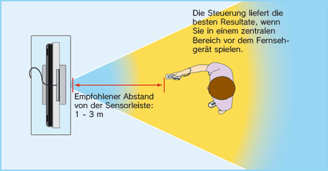
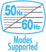

2 |
Zum sicheren Gebrauch |
 |
❶ Tragen Sie die Handgelenksschlaufe! Vergewissern Sie sich, dass bei jedem Spieler sowohl die Handgelenksschlaufe (RVL-018 oder RVL-018A) als auch der Stopper fest und sicher angelegt sind. Wenn mehrere Spieler abwechselnd mit derselben Wii-Fernbedienung spielen, muss jeder Spieler die Handgelenksschlaufe beim Spielen korrekt verwenden. Die Verwendung der Handgelenksschlaufe verhindert unbeabsichtigtes Werfen oder Fallenlassen der Wii-Fernbedienung, falls diese während des Spielens aus Versehen losgelassen wird. 

❷ Halten Sie die Wii-Fernbedienung fest in der Hand und lassen Sie sie nicht los! Lassen Sie während des Spielens die Wii-Fernbedienung nicht los, selbst wenn Sie die Handgelenksschlaufe verwenden, und bewegen Sie sich beim Spielen nicht mehr als nötig. Spielen Sie zum Beispiel Bowling in Wii Sports™, dann müssen Sie zum Loslassen der Kugel im Spiel nur den B-Knopf auf der Wii-Fernbedienung loslassen – LASSEN SIE AUF KEINEN FALL DIE Wii-FERNBEDIENUNG SELBST LOS. Sollten Sie beim Spielen feuchte Hände bekommen, unterbrechen Sie das Spielen unbedingt und trocknen Sie Ihre Hände ab. Übermäßige Bewegungen und ein Loslassen der Wii-Fernbedienung könnte die Handgelenksschlaufe beschädigen. Sollte Ihnen die Wii-Fernbedienung entgleiten, könnte dies zu Verletzungen von in der Nähe stehenden Personen oder zu Schäden an nahegelegenen Objekten führen. Weitere Informationen zum Gebrauch der Handgelenksschlaufe Der Spielablauf mit der Wii-Fernbedienung kann schnelle und dynamische Bewegungsabläufe mit sich bringen. Bitte verwenden Sie stets die Handgelenksschlaufe, um das Risiko zu verringern, dass Ihnen die Wii-Fernbedienung beim Spielen aus der Hand gleitet und dadurch Schäden an der Umgebung sowie der Wii-Fernbedienung entstehen oder andere Personen verletzt werden.
Sorgen Sie für ausreichend Platz zum Spielen! Während des Spielens mit der Wii-Fernbedienung werden Sie möglicherweise Platz zum Bewegen benötigen. Stellen Sie sicher, dass sich in Ihrem Bewegungsumfeld weder andere Personen noch Gegenstände oder Möbel befinden, um ein Aneinanderstoßen zu vermeiden. Beachten Sie bitte auch den empfohlenen Mindestabstand von einem Meter zum Fernseher. 
Diese Informationen können Sie auch unter

Vielen ist der Unterschied zwischen dem 50Hz- und dem 60Hz-Modus nicht bekannt. Da die meisten neueren Fernsehgeräte den 60Hz-Modus unterstützen, lohnt es sich, herauszufinden, ob Ihr Fernseher kompatibel ist. Vereinfacht gesagt bezieht sich der Begriff Hz (Hertz) auf die Anzahl der Bilder, die pro Sekunde auf dem Bildschirm dargestellt werden. 50Hz stellt 25 Bilder pro Sekunde dar, wohingegen 60Hz annähernd 30 Bilder pro Sekunde darstellt. Dies klingt nicht nach einem gravierenden Unterschied, allerdings ist die Qualitätsverbesserung auf dem Bildschirm eindeutig zu sehen. Die 60Hz (480i)-Darstellung bietet Spielern eine qualitativ hochwertigere Bilddarstellung. Besondere Merkmale sind die sanftere Bildwiedergabe mit reduziertem Flimmern und eine optimale Spielgeschwindigkeit, die zu einer großartigen Spielerfahrung beitragen. Standardmäßig ist der 50Hz (576i)-Modus ausgewählt. Um den 60Hz (480i)-Modus zu aktivieren, wählen Sie diesen Modus bitte in den Wii-Systemeinstellungen unter FERNSEHER aus. Manche, in erster Linie ältere, Fernsehgeräte können jedoch keine Spiele im 60Hz (480i)-Modus darstellen. Daher kann es bei einem kleinen Prozentsatz der Spieler zu Schwierigkeiten bei der Darstellung dieses Spiels auf ihren Fernsehgeräten kommen. Um herauszufinden, ob Ihr Fernsehgerät den 60Hz (480i)-Modus darstellen kann, schlagen Sie bitte in der zugehörigen Bedienungsanleitung nach oder wenden Sie sich an den zuständigen Hersteller. Sollte nach dem Wechsel zum 60Hz (480i)-Modus der Bildschirm schwarz bleiben oder ein verzerrtes Bild darstellen, ist es wahrscheinlich, dass Ihr Fernseher den 60Hz (480i)-Modus nicht unterstützt. Wenn Sie den RESET-Knopf der Wii-Konsole betätigen, während Sie unten auf dem Steuerkreuz gedrückt halten, startet das Wii-System im 50Hz (576i)-Modus neu. Weitere Informationen zur Einstellung des Darstellungsmodus erhalten Sie in der Wii-Bedienungsanleitung – Kanäle und Einstellungen. Wenn Sie zum Anschluss ein Wii-RGB-Kabel (RVL-013) (separat erhältlich) verwenden und das Fernsehgerät über einen RGB-Eingang und eine PAL60-Kompatibilität verfügt, oder wenn Sie zum Anschluss ein Wii-Komponenten-Video-Kabel (RVL-011) (separat erhältlich) verwenden und das Fernsehgerät über einen Komponenten-Eingang verfügt, erfolgt eine wesentlich schärfere Bildwiedergabe.

Die EDTV/HDTV (480p)-Darstellung erfolgt progressiv und bietet Spielern die qualitativ hochwertigste Bilddarstellung. Besondere Merkmale sind die gestochen scharfe Bildwiedergabe und eine optimale Spielgeschwindigkeit mit stark reduziertem Flimmern, die zu einer großartigen Spielerfahrung beitragen. Wir von Nintendo® möchten, dass die Spieler unsere Spiele unter den bestmöglichen Bedingungen erleben. Abhängig von der Kombination des verwendeten Kabels und des Fernsehgerätes kann es jedoch sein, dass dieser Modus nicht dargestellt werden kann. Schlagen Sie bitte in der zugehörigen Bedienungsanleitung nach oder wenden Sie sich an den Hersteller, um zu erfahren, ob Ihr Fernsehgerät über die erforderliche Progressive Scan-Technik verfügt. Stellen Sie außerdem sicher, das Wii-Komponenten-Video-Kabel (RVL-011) (separat erhältlich) zu verwenden und Progressive Scan am Fernsehgerät zu aktivieren, wenn Sie diesen Modus auswählen. Standardmäßig ist der 50Hz (576i)-Modus ausgewählt. Um den EDTV/HDTV (480p)-Modus zu aktivieren, wählen Sie diesen Modus bitte in den Wii-Systemeinstellungen unter FERNSEHER aus. Weitere Informationen zur Einstellung des Darstellungsmodus erhalten Sie in der Wii-Bedienungsanleitung – Kanäle und Einstellungen. |

 |
 |
 |